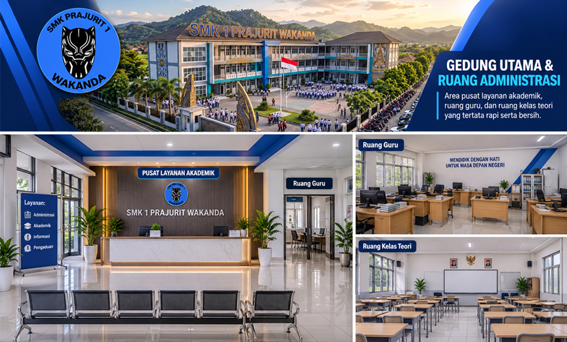
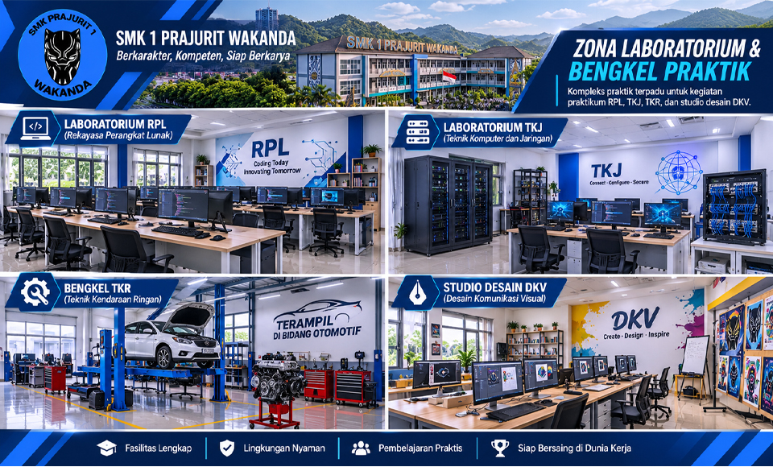
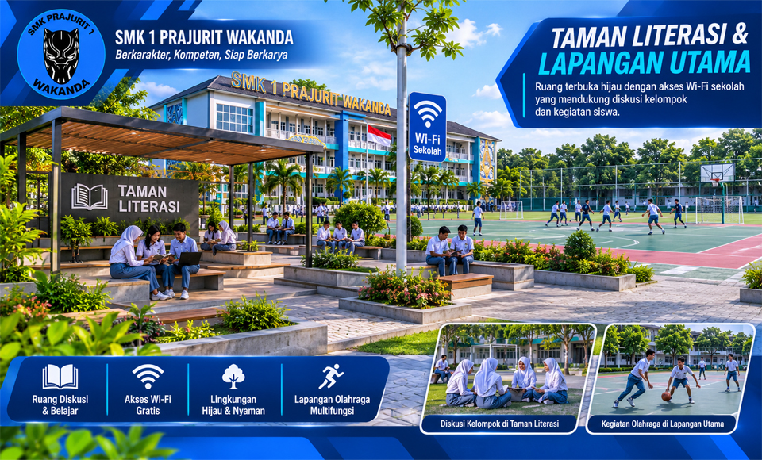

Perjalanan Membangun Pendidikan Vokasi Berkualitas
SMK PRAJURIT 1 WAKANDA didirikan pada tanggal 17 Juli 2004 oleh Yayasan Pendidikan Prajurit Wakanda bersama tokoh masyarakat dan praktisi industri daerah. Pada awal berdirinya, sekolah ini hanya membuka dua program keahlian dengan 120 peserta didik dan 14 tenaga pendidik.
Seiring pesatnya perkembangan teknologi informasi dan kebutuhan tenaga terampil di sektor industri, SMK PRAJURIT 1 WAKANDA terus bertransformasi. Pada tahun 2012, sekolah resmi memperoleh status Akreditasi A dan memperluas layanan pendidikan menjadi empat program keahlian unggulan: Rekayasa Perangkat Lunak, Teknik Komputer dan Jaringan, Teknik Kendaraan Ringan, serta Desain Komunikasi Visual.
Kini, SMK PRAJURIT 1 WAKANDA dipercaya sebagai salah satu sekolah menengah kejuruan rujukan yang menjalin kemitraan aktif dengan lebih dari 45 perusahaan nasional dalam program praktik kerja lapangan, sertifikasi kompetensi, dan rekrutmen lulusan.
Identitas Resmi Sekolah
| Nama Sekolah | SMK PRAJURIT 1 WAKANDA |
|---|---|
| NPSN | 20261108 |
| Status Sekolah | Swasta |
| Penyelenggara | Yayasan Pendidikan Prajurit Wakanda |
| Akreditasi | A (Unggul) |
| Tahun Berdiri | 2004 |
| Kurikulum | Kurikulum Merdeka Vokasi |
| Kepala Sekolah | Drs. H. T'Challa Wijaya, M.Pd. |
| Alamat | Jl. Raya Kaligondang – Kejobong, Kec. Kaligondang, Kab. Purbalingga, Jawa Tengah 53391 |
| Telepon & Email | (0281) 774-108 / info@smk1wakanda.sch.id |
Visi, Misi, dan Tujuan Pendidikan
“Terwujudnya lulusan SMK PRAJURIT 1 WAKANDA yang unggul dalam prestasi, terampil menguasai teknologi, berkarakter mulia, dan mampu bersaing di tingkat global pada tahun 2030.”
Misi Sekolah
- Menyelenggarakan pembelajaran kejuruan berbasis praktik industri dan perkembangan ilmu pengetahuan teknologi.
- Membentuk peserta didik yang beriman, bertakwa, disiplin, jujur, dan memiliki etos kerja tinggi.
- Meningkatkan kualitas pendidik dan tenaga kependidikan melalui pelatihan serta sertifikasi profesi berkelanjutan.
- Memperluas kemitraan strategis dengan dunia usaha dan dunia industri dalam penyelarasan kurikulum serta penyaluran kerja.
- Menumbuhkan jiwa kewirausahaan, kreativitas, dan kepedulian terhadap lingkungan di kalangan warga sekolah.
Tujuan Pendidikan
- Menghasilkan lulusan yang terserap di dunia kerja maupun berwirausaha mandiri minimal 90% dalam satu tahun setelah kelulusan.
- Membekali seluruh peserta didik dengan sertifikat kompetensi keahlian yang diakui secara nasional.
- Meraih prestasi juara dalam ajang Lomba Kompetensi Siswa (LKS), olimpiade sains terapan, serta kompetisi seni dan olahraga.
- Mewujudkan tata kelola sekolah berbasis digital yang transparan, akuntabel, dan ramah lingkungan.
Sambutan Kepala Sekolah
Puji syukur ke hadirat Tuhan Yang Maha Esa atas limpahan rahmat-Nya sehingga SMK PRAJURIT 1 WAKANDA terus tumbuh menjadi rumah belajar yang nyaman, inovatif, dan inspiratif bagi generasi muda.
Pendidikan kejuruan memiliki peran strategis dalam menyiapkan sumber daya manusia yang tidak hanya memahami teori, tetapi juga terampil menyelesaikan persoalan nyata di lapangan. Oleh karena itu, setiap program keahlian di SMK PRAJURIT 1 WAKANDA dirancang agar siswa terbiasa bekerja dalam tim, berpikir kritis, dan adaptif terhadap transformasi digital.
Kami mengajak orang tua dan masyarakat untuk terus bersinergi mendampingi putra-putri kita meraih masa depan yang gemilang bersama SMK PRAJURIT 1 WAKANDA.
Suasana Lingkungan SMK PRAJURIT 1 WAKANDA

Gedung Utama & Ruang Administrasi
Area pusat layanan akademik, ruang guru, dan ruang kelas teori yang tertata rapi serta bersih.

Zona Laboratorium & Bengkel Praktik
Kompleks praktik terpadu untuk kegiatan praktikum RPL, TKJ, TKR, dan studio desain DKV.

Taman Literasi & Lapangan Utama
Ruang terbuka hijau dengan akses Wi-Fi sekolah yang mendukung diskusi kelompok dan kegiatan siswa.